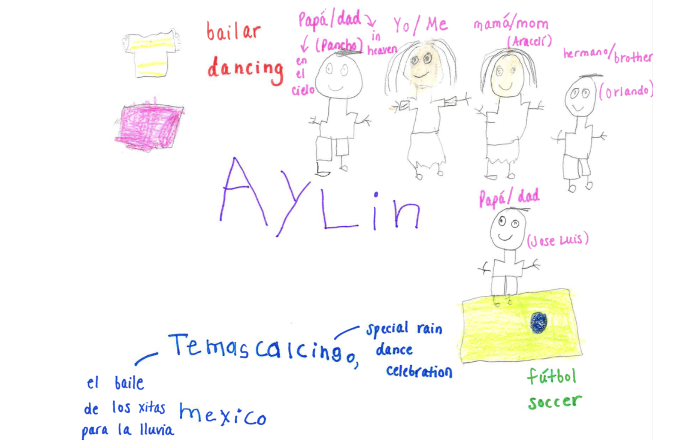
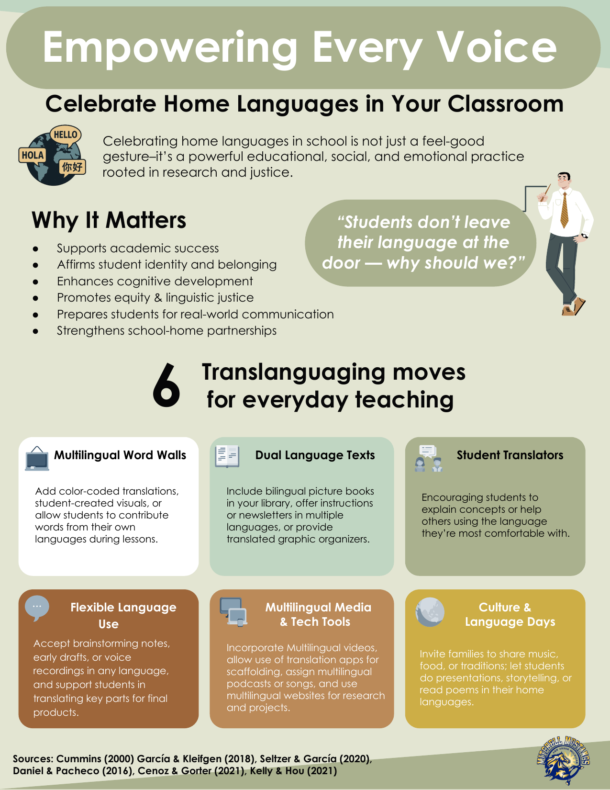
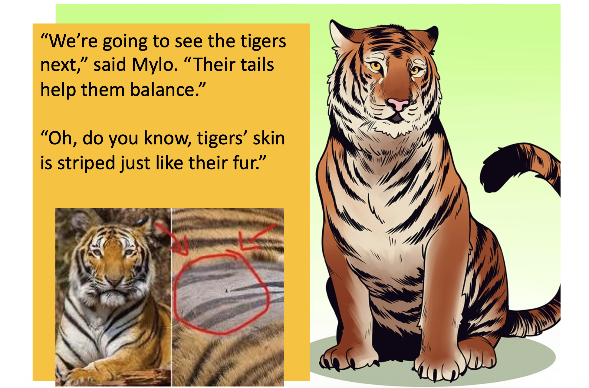
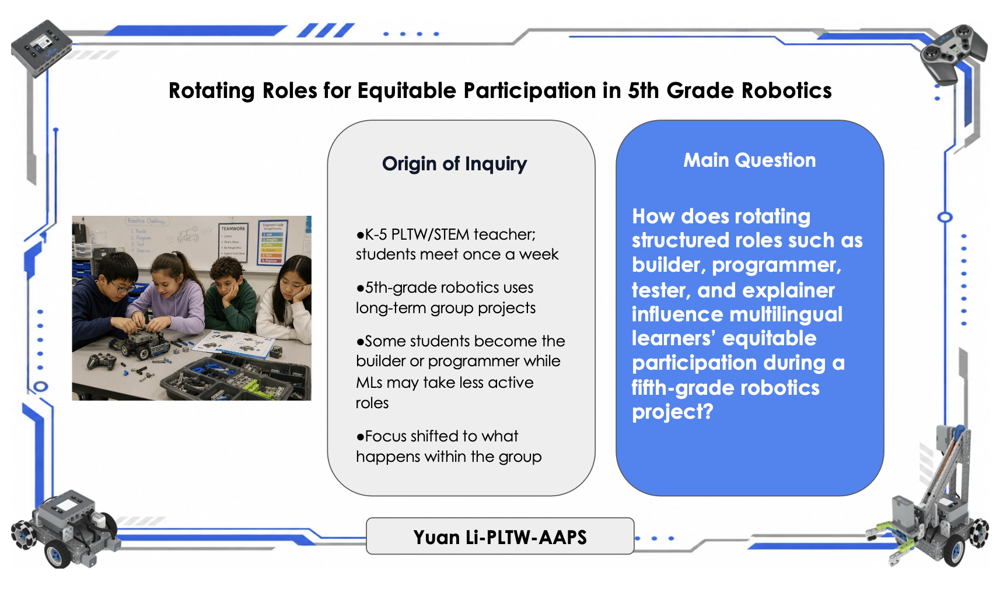
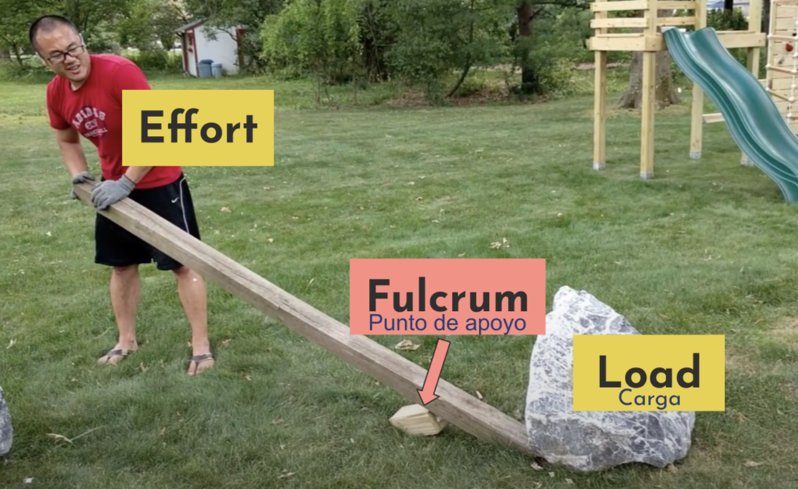
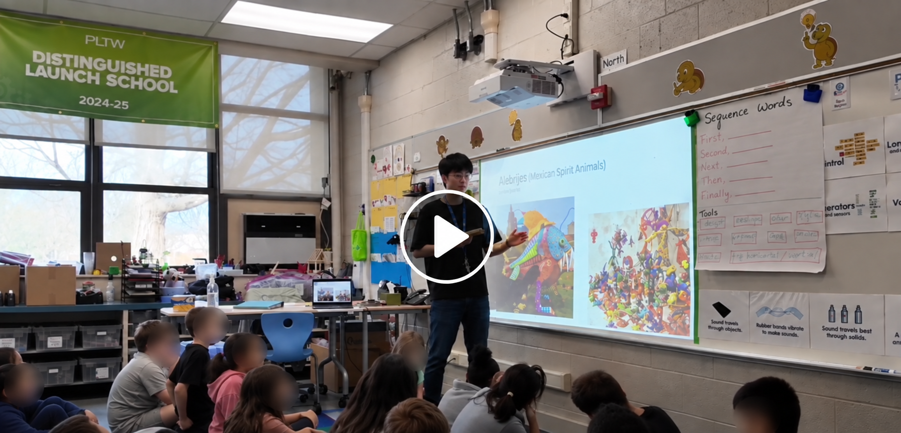

Welcoming
I want students to feel supported, valued, and capable of participating in meaningful academic work.
Teaching Philosophy
As a former English language learner, Mandarin Chinese teacher, and elementary PLTW/STEM teacher, I design learning where students use language to think, collaborate, build, solve problems, and communicate their ideas.
MLs thrive when teachers appreciate students' languages and cultures as assets, intentionally scaffold access to content, and create meaningful opportunities for students to use language as a tool to engage and demonstrate understanding in various ways.
Teacher Identity
My teaching identity is shaped by my own experience as an English language learner, my work as a Mandarin Chinese teacher, my experience teaching from Young 5s through college, and my current work in elementary PLTW/STEM.
I want students to feel supported, valued, and capable of participating in meaningful academic work.
I use visuals, drawing, home language, peer collaboration, and multiple participation paths.
I help colleagues see multilingual learners from an asset-based perspective instead of a deficit view.
My Core Beliefs
Students' home languages, cultures, prior knowledge, and lived experiences are resources for learning.
Students need visuals, modeling, sentence frames, demonstrations, and explicit vocabulary support.
Structured talk, translanguaging, collaboration, and hands-on STEM tasks support language use.
Students can demonstrate understanding through explanations, models, diagrams, performance tasks, and reflection.
My Teaching Approach
My teaching approach follows a cycle: I start with students' strengths, make content visible and concrete, structure language for participation, and give students multiple ways to show understanding. In PLTW/STEM lessons, this means students do more than listen. They build, test, sketch, label, discuss, explain, and reflect.
Assets
Home language, culture, interests, and prior knowledge open the lesson.
Access
Students see, touch, model, and manipulate the idea before naming it.
Interaction
Vocabulary supports, partner talk, and roles help students participate.
Expression
Students build, draw, label, explain, test, present, and reflect.
Theory to Practice
My approach reflects the belief that multilingual learners learn best when language is meaningful, contextualized, interactive, and connected to content.
Comprehensible input and low affective filter.
Output helps learners notice gaps and develop language.
Interaction and negotiation of meaning support learning.
Collaboration and ZPD-aligned scaffolds build independence.
Language functions as meaning-making in context.
Translanguaging values students' full linguistic resources.
Evidence
These linked artifacts show how my beliefs move into planning, instruction, schoolwide support, and equitable participation.

LS 6300 PERASupports multilingual learners beyond one classroom through a schoolwide asset-based lens.
Open artifact folder
TEL 5200 MASSCelebrates home language, multilingual identity, culture, and asset-based advocacy.
Open artifact folder
TEL 6210Shows accessible curriculum design through meaningful language support and modified materials.
Open artifact folder
TEL 6350 TIARBuilds equitable participation, student voice, and structured collaboration in STEM groups.
Open artifact folder
Vocabulary TeachingShows how I teach STEM vocabulary through visuals, bilingual supports, concrete examples, action, songs, and a see-it, say-it, use-it, explain-it cycle.
Open artifact folder
Teaching in ActionShows lesson recordings and reflections on modeling, interaction, and student engagement. Full videos are shared only with permission because students are visible.
Request permission to viewFuture Growth
I will continue learning through TESOL research, professional development, collaboration with ELL specialists and classroom teachers, and teacher inquiry grounded in classroom evidence. My future work will keep connecting language learning, STEM learning, translanguaging, project-based learning, and equitable participation.